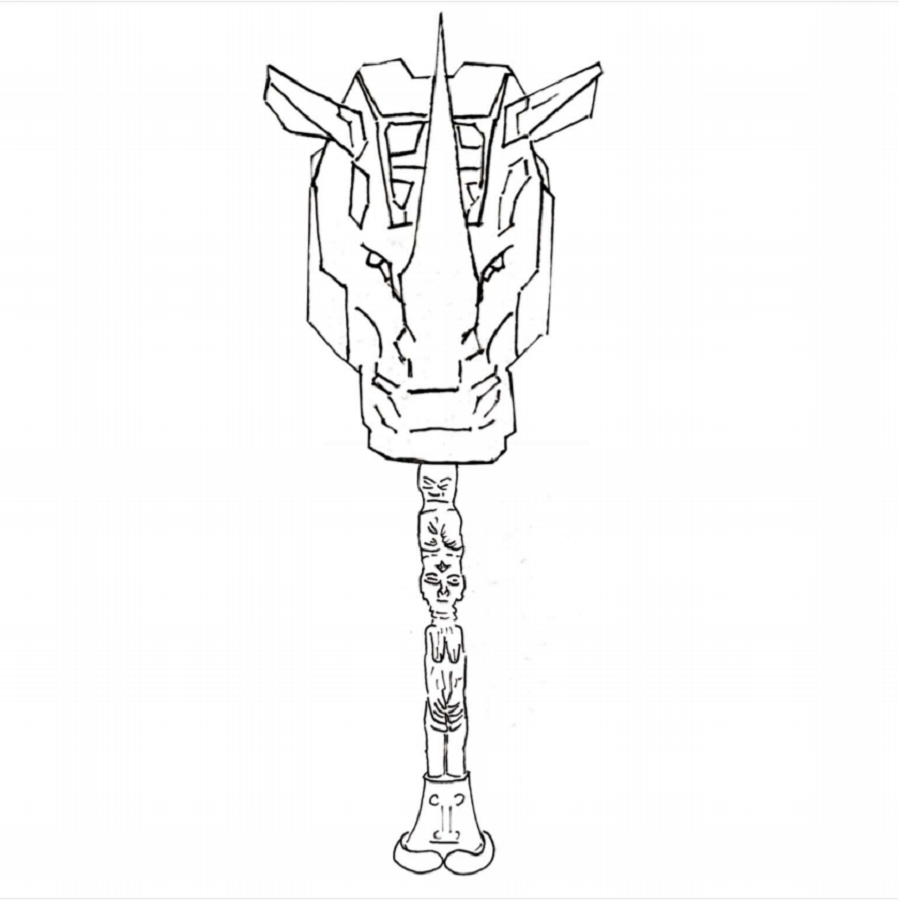
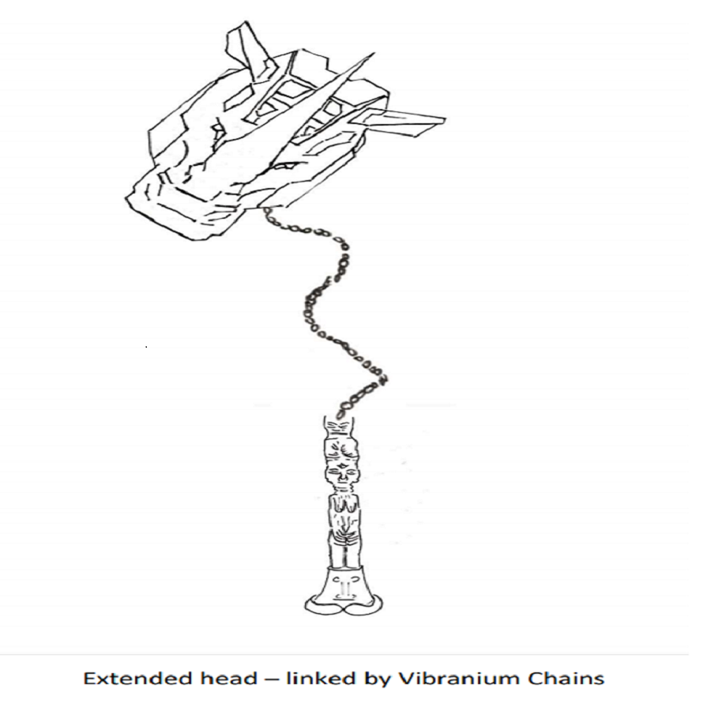
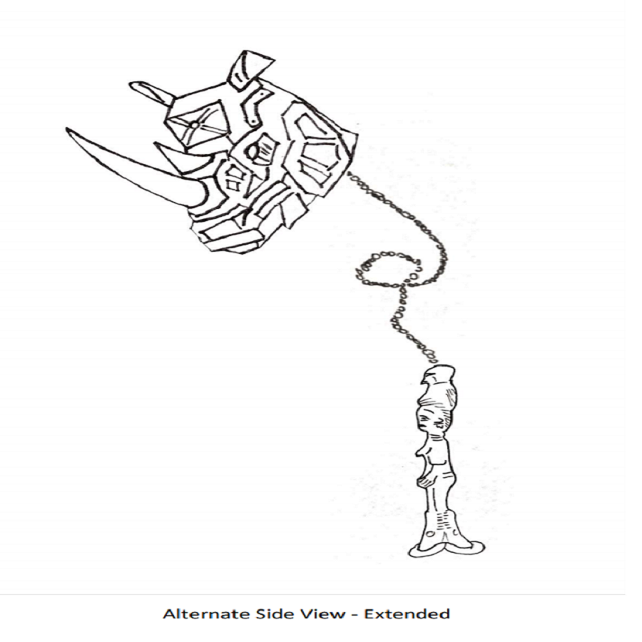
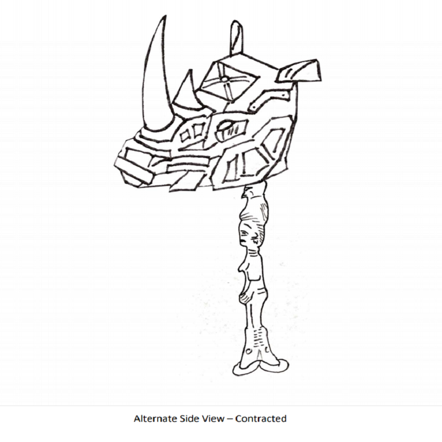
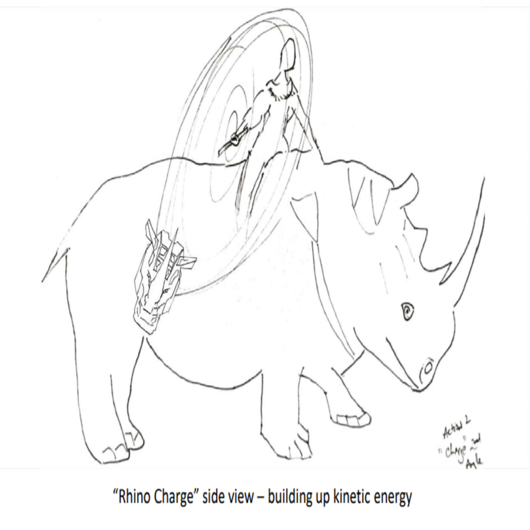
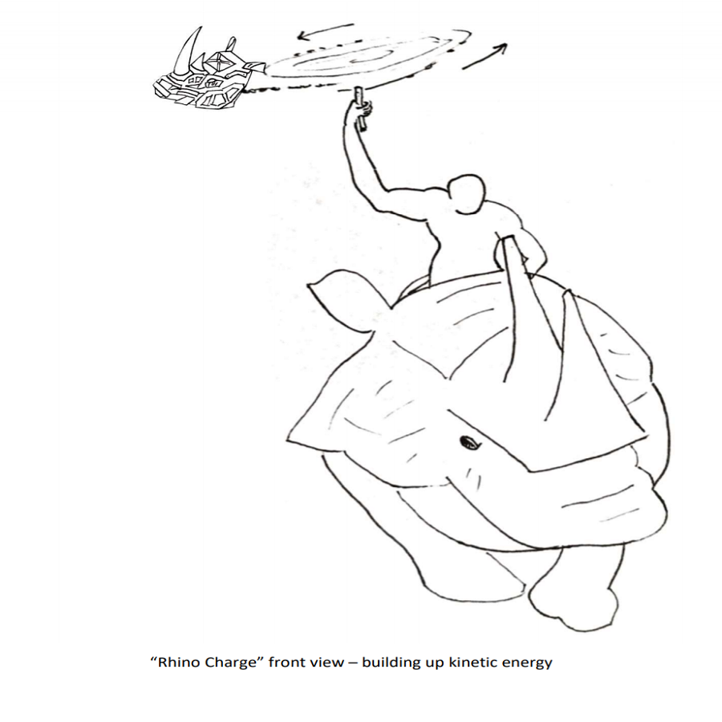
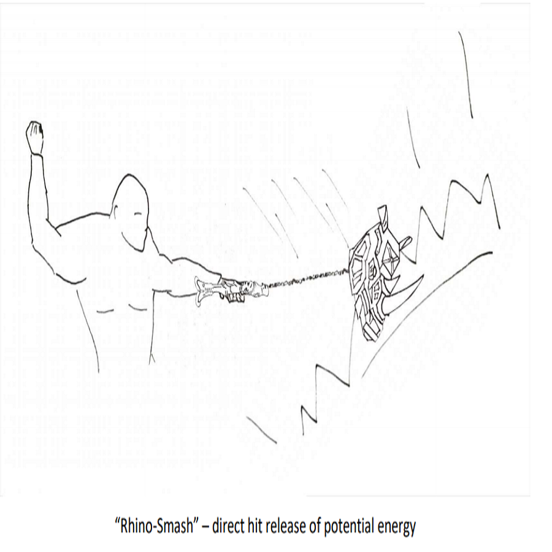
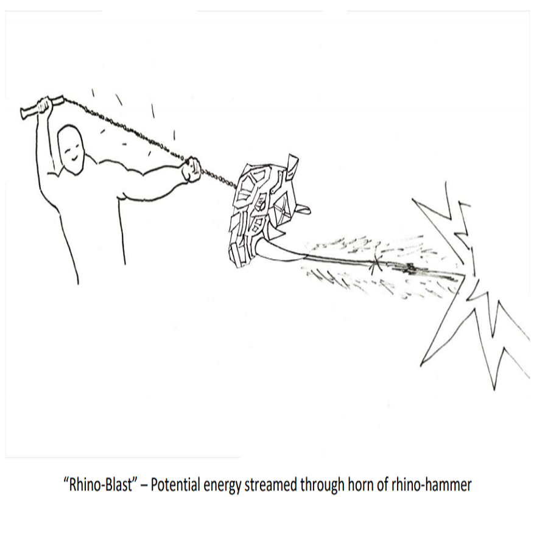
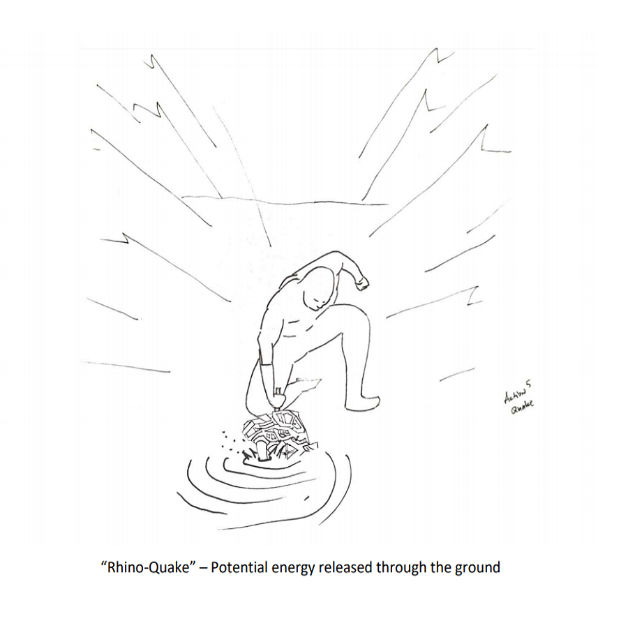
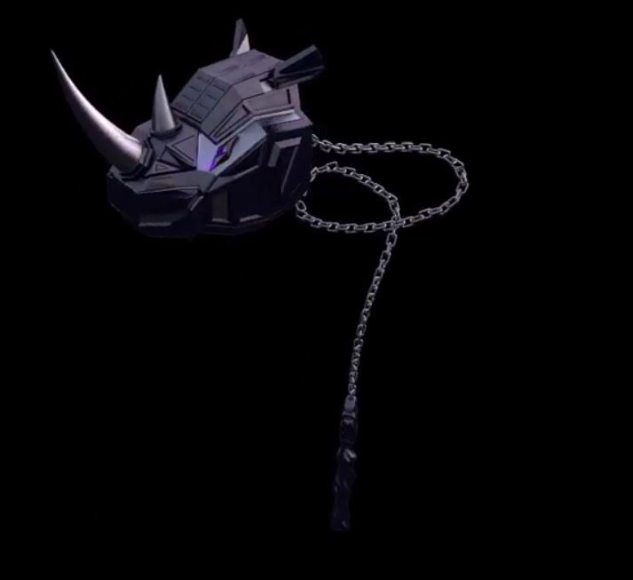

African Rhino Hammer
Rhino Hammer was the result of a school project I completed with five other peers (James Caskey, Cyan Chen, Nicholas Trowbridge, Danny Vu, and Andy Zheng) for the Human-Computer Interaction/design class taught by Marty Siegel at Indiana University. After doing intensive research, we have prototyped, storyboarded, and viewer tested a weapon for the Black Panther sequel. It is a weapon designed for the character W'Kabi that we believe will continue Black Panther's social and cultural significance as well as being extremely marketable.
Our Challenge
Black Panther was one of the most culturally significant movies for African Americans in recent history by involving the African culture in a mainstream fashion. How can we generate a concept for Black Panther's sequel that is just as successful as the original film?
Our Process
Research
After interviewing a worker on the Black Panther movie team, we learned about what happened during the film's design process to create an amazing product. We also interviewed two owners of the local comic book store in Bloomington, Indiana to grasp what was important to fans of the Marvel Universe. After doing some further on-line and artwork research, we can summarize our research into three main points:
- People love the cultural authenticity represented in the film
- The main cultural weaponary referenced in the film was the spear which leaves a lot of negative space to work with
- The rhinos in the film were very popular and marketable as toys
Insight
After all our research, we understood that our design had to stay culturally rooted, be a weapon other than a spear, and relate to the rhinoceros. Also, we concluded that African-Americans and Caucasians were a majority of the viewers.
Concept
To come up with a diverse set of concepts, each team member came up with their own design and gave a short presentation to explain their thoughts. After our conversation, we talked about our findings and related it all back to our insights.
- Concept 1: Upgraded Black Panther Suit - can now deploy a shield from his suit.
- Concept 2: Motorcycle with Gatling gun
- Concept 3: African Killer Bee Nanobots
- Concept 4: Headdress to full Body Suit for Shuri
- Concept 5: Voodoo Inspired Clothing and Staff for Summoning Spirits
- 
- 
- 
- 

- 
- 
- 
- 
- 
Iterate
Since the Rhino Hammer was made for people to look at, we created a ”movie“ that allowed us to see what people thought of our design.
Prototype
Our focus was to design a weapon for the Black Panther sequel that ties into the African culture. The result of our process was the African Rhino Hammer. We believe that this design could be beneficial to the company because the hammer could integrate into video games, spread knowledge about African culture to others, as well as raising awareness to the Rhino poaching issue.
Reflection
When this project came to an end, I did a self-reflection and asked myself what would I have done differently if I had more time and found myself thinking about conducting more primary research. This type of research is very helpful to the researching phase because I get to hear what others are thinking. Talking to people is one of my weaknesses and what other way to improve that skill by conducting interviews. In the future, I hope I can find the opportunity to talk to others while in the design phase of upcoming projects.